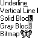

title: Carets description: This section discusses carets which are blinking lines, blocks, or bitmaps in the client area of a window. ms.assetid: 'vs|winui|~\winui\windowsuserinterface\resources\carets.htm' keywords:
A caret is a blinking line, block, or bitmap in the client area of a window. The caret typically indicates the place at which text or graphics will be inserted.
The following illustration shows some common variations in the appearance of the caret.

Applications can create a caret, change its blink time, and display, hide, or relocate the caret.
| Name | Description |
|---|---|
| About Carets | Discusses carets. |
| Using Carets | Code samples that show how to perform tasks related to carets. |
| Caret Reference | Contains the API reference. |
| Name | Description |
|---|---|
| CreateCaret | Creates a new shape for the system caret and assigns ownership of the caret to the specified window. The caret shape can be a line, a block, or a bitmap. |
| DestroyCaret | Destroys the caret's current shape, frees the caret from the window, and removes the caret from the screen. |
| GetCaretBlinkTime | Retrieves the time required to invert the caret's pixels. The user can set this value. |
| GetCaretPos | Copies the caret's position to the specified POINT structure. |
| HideCaret | Removes the caret from the screen. Hiding a caret does not destroy its current shape or invalidate the insertion point. |
| SetCaretBlinkTime | Sets the caret blink time to the specified number of milliseconds. The blink time is the elapsed time, in milliseconds, required to invert the caret's pixels. |
| SetCaretPos | Moves the caret to the specified coordinates. If the window that owns the caret was created with the CS_OWNDC class style, then the specified coordinates are subject to the mapping mode of the device context associated with that window. |
| ShowCaret | Makes the caret visible on the screen at the caret's current position. When the caret becomes visible, it begins flashing automatically. |